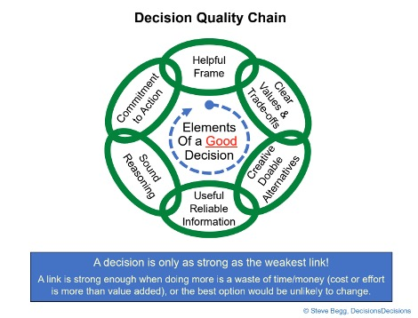

| ||
Knowledge Content LibrarySix Steps to Making a Quality DecisionSteve Begg, The University of Adelaide STORY: 6 steps to a good decision – original version was published online by Telstra Insights in 2017. This is version is slightly updated. Professor Steve Begg is a lecturer at the University of Adelaide where he researches the ways people make decisions, particularly under uncertain conditions. His expertise also draws on his career in the oil and gas sector spanning several decades. "We are interested in finding the most effective processes for people to make decisions that are in their, not someone else’s, interest,” he says. The outcomes of most major decisions are affected by all kinds of uncertainties that the decision-maker cannot control, he adds, so the outcome cannot be predicted with certainty – good decisions can have bad outcomes and vice versa! "Many people in senior leadership positions today, think they are there because they are good at making decisions; but even bad decisions can deliver good outcomes when you have a combination of good luck and being in the right place at the right time.” Sure, decision making is an art; it’s also a science, Begg says. "People do postgraduate degrees in this field.” Humans – no matter how intelligent - fall prey to a whole range of systematic biases, Begg says. Often the way we prefer to make decisions is counter to how we should make them, he says. "Our intuition is often very wrong in situations of novelty, complexity and uncertainty.” Decision making has a formal accepted methodology – and even an international professional organization promoting the underlying principals, the Society of Decision Professionals. "Decision science is based on logic and evidence and it has come up with a structured, pragmatic and scalable application of tools & processes to deliver high quality decisions” Begg says. The method is Decision Analysis. The scalability is very important - DA balances the resources (time, effort, cost) needed to make the best decision, with the importance/difficulty/consequences of the decision (and resources required to implement it). It actually avoids "paralysis by analysis”. "The only part of how your life turns out (or your organization’s) that you can control is your decisions (and their implementation). By using the methods and processes of "decision analysis”, people can make higher quality decisions – and so will have the best chance of achieving their desired outcomes.” How can you bring good decision-making into an organisation? Begin by making sure that key decision-makers have a good understanding of the six steps of high quality decisions, says Begg. SIX STEPS TO A GOOD DECISION
 Step 1: Frame the decision appropriately Identify any previous decisions or policies that must be adhered to. Clearly define the decision that must be made and be sure it is the right/real one – and if there are multiple related decisions, try to focus on the most important to be made first and defer others to later. Identify any genuine constraints – but don’t impose any "nice to’s” (eg the project must start by 1 Jan). Likewise, identify any assumptions and critically assess their validity. Step 2: Be clear about your objectives What are the real reasons behind why you’re are going to make the decision? What are you fundamentally wanting to achieve - how do you define "value” in the context of this decision? How will you assess or evaluate achievement? Be clear about the priorities when there are multiple objectives. If you are making a decision on behalf of an organization, make sure you have not incorporated any personal motivations. Step 3: Develop options Here, you need to get creative and identify a good range of distinct "doable” alternatives that might be selected to achieve your desired outcomes. Avoid small variations on a theme. Rule out any alternative that does not meet a "must have” or "must do” criterion. Think about including flexible options that allow you to accelerate/expand/defer/contract/exit as you learn more about potential outcomes during implementation. Step 4: Gather useful, reliable information What background information do you have? You only need to get extra information that impacts predicted achievement of your objectives and which has potential to change the decision you would make without it! How reliable is the information? Is it subject to any biases – either through collection or analysis? Step 5: Weigh the evidence and choose the best In this step, you evaluate how the different alternatives might achieve your objectives, and choose the one that is expected to deliver the most value. Be objective, think rationally - make sure you are not falling prey to "thinking” biases or motivational biases. If there is significant uncertainty, use the rules of probability to keep your thinking straight. And make sure you don’t fall into the trap of trying to get the most precise predictions of the outcomes of your alternatives – you only need to know enough to identify the best alternative. Step 6: Commit to action You haven’t really made the decision, it’s just an idea, until you have assigned the resources (time, money) required to implement it! And you need an implementation plan, ensuring everyone involved is "on board” – and, back to step 3, ensuring its "doable”. On each of these six steps, only do enough "work” such that doing any more would not change the decision, or, the cost of doing more outweighs the benefit. Always review the decisions you have made. Document the steps, outline the alternatives and summarize the reasons for your choice. This makes it easier to revisit decisions in future to see which aspects or your process are working and which or not - and to distinguish the impacts on outcome of the things you can control (the quality of your decisions and their implementation) from those you cannot control (luck, decision of others, "nature”, ….). Click here to download a more detailed Cheat Sheet for Better Decision Making Keywords: decqual, Embedded embedda, Personal Decisions perdec, Portfolio Decision Analysis portda | ||